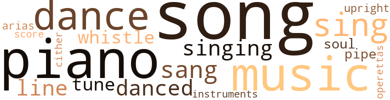
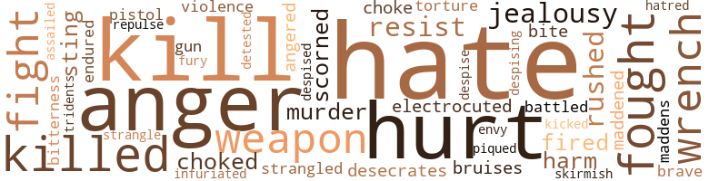
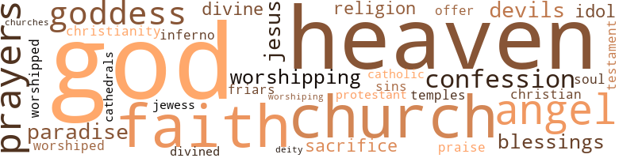

Redder Blood, by Ashby, William M. (1915)
58 music-related terms matched in this text.
Most frequent terms in this topic: piano (7); music (6); dance (6); sing (6); songs (5)
aria.n.01
Definition: an elaborate song for solo voice
| word | sentence |
|---|---|
| arias | Elsie Van Deman sang some of the arias from the latest French operas and Charlie gave by request a performance of the last creation of the Parisian tango . " |
dance.n.01
Definition: an artistic form of nonverbal communication
| word | sentence |
|---|---|
| dance | " Do you suppose , Miss Croydon , that the Cholly Knickerbockers , whose living depends on their social columns in the popular dailies , are going to let you , the prettiest and most talked about out-of-town girl in this vicinity , come into town to a theatre party , dance , or dinner , without giving all society a notification of your intention ? " |
| dance | After noon I have luncheon , take a nap , go to a concert or a dance , or read a novel . |
| dance | After dinner I go to the opera or a dance , then to bed again . |
| dance | " Do you remember what I said to you at the Howell dance about engagements ? " |
| dance | The romping , energy-creating , soul-stirring zigzag snake-dance had lost none of its fascination , and up and down Waldron Field undergrads , recent " grads , " and alumni danced this unique dance until they were almost without strength . |
| dance | In one dance , in our brief conversation , it was all the great soul of Adrian , not the outward Adrian at all , that I was conscious of . |
dance.v.03
Definition: skip, leap, or move up and down or sideways
| word | sentence |
|---|---|
| danced | Their costly home stood on the top of one of the mountains in Clairmont , and its bronzed roof caught the sun 's first rays as they awoke in the morning and the last danced on it as they retired at night . |
| danced | The romping , energy-creating , soul-stirring zigzag snake-dance had lost none of its fascination , and up and down Waldron Field undergrads , recent " grads , " and alumni danced this unique dance until they were almost without strength . |
| danced | A senior wrangler avoids a pretty heiress , a devout Y. M. C. A. member falls into the net stretched by a wily little widow ; two " pals " dissolve an almost sublime friendship because some blushing beauty may have danced with one more than with the other ; promises are made , oaths are taken only to be broken . |
music.n.01
Definition: an artistic form of auditory communication incorporating instrumental or vocal tones in a structured and continuous manner
| word | sentence |
|---|---|
| music | But even so , the smile on her lips stayed in his eyes ; her voice , like music , stayed in his heart . |
| music | He then asked Wanda to give them some music , and she played one of the latest tangoes after she had executed something more classical , and Adrian could not resist gliding around the room a little with Mrs. Brockton , who was a good dancer . |
| music | They arose , and Adrian went into the music room . |
| music | They were silent for a moment while the music was playing , - playing softly , sweetly , plaintively . |
| music | He walked on the various boulevards , went to the operas , the music halls , hoping to see beautiful women or something that would divert him . |
| music | He went to the cabinet and taking therefrom a sheet of music that Adrian had bought , - a Jove song in one of the season 's popular operettas , which he had heard somewhere along Broadway , - placed it before her . |
musical_instrument.n.01
Definition: any of various devices or contrivances that can be used to produce musical tones or sounds
| word | sentence |
|---|---|
| instruments | His skull was opened , and the wielder of the sharp instruments moved them with skillful accuracy . |
operetta.n.01
Definition: a short amusing opera
| word | sentence |
|---|---|
| operettas | He went to the cabinet and taking therefrom a sheet of music that Adrian had bought , - a Jove song in one of the season 's popular operettas , which he had heard somewhere along Broadway , - placed it before her . |
piano.n.01
Definition: a keyboard instrument that is played by depressing keys that cause hammers to strike tuned strings and produce sounds
| word | sentence |
|---|---|
| piano | Adrian arose from the piano , and Wanda , seating herself , sang : " My soul 's own , heart of my heart , Wilt thou in me believe ? |
| piano | '' It is useless , " he said sadly , raising one of his hands and placing it on the top of the piano as he looked into her face ; " I hear but I can not respond . |
| piano | " Shall it be the piano of the Victrola ? " she asked . |
| piano | One evening in early March , about fifteen months after their separation , Zelda sat at the piano in her small home , playing softly an old favorite of hers and Stanton 's . |
| piano | The suspense irritated Zelda , and she arose from the piano to come to the hall and find out who had called . |
| piano | " Certainly not ; I 'm perfectly myself again ; to show you that I 'm not the least nervous I 'm going to play you something on the piano . " |
| piano | At the piano one would have thought her some Russian virtuoso about to give her farewell concert as her little fingers ran over the keys . |
pipe.n.04
Definition: a tubular wind instrument
| word | sentence |
|---|---|
| pipe | You smoke your pipe ; in your every revery , in every little ring of smoke that you blow heavenward , I am in the center ; you build your air castles , and in each castle it is I you see darting through its halls and rooms . " |
score.n.02
Definition: a written form of a musical composition; parts for different instruments appear on separate staves on large pages
| word | sentence |
|---|---|
| score | In the cities , from the theatre stages , the score flashed " Pemberton 6 - Hall o. " Around the bulletin boards in front of the newspaper buildings so thickly had humanity collected that to pass was impossible . |
sing.v.02
Definition: produce tones with the voice
| word | sentence |
|---|---|
| sang | Adrian arose from the piano , and Wanda , seating herself , sang : " My soul 's own , heart of my heart , Wilt thou in me believe ? |
| sang | Elsie Van Deman sang some of the arias from the latest French operas and Charlie gave by request a performance of the last creation of the Parisian tango . " |
| sang | " Do you remember , dearest , when I sang the little song , - " My love , my life , my all in all , " - after I had revived you from the faint ? |
| sing | that I might sing them to you now . |
| sing | We give to every little girl a doll at Christmas ; we like to see her hold it ; we let her make its little clothes , tell it little stories , sing it little songs , rock it to sleep , prattle the little maternal things to it that she thinks it understands . |
| sing | " Wo n't you sing something , Stanton ? " she asked after she had played one of Chadwick 's brisk allegrettos . |
| sing | He had not noticed her disquietude , and he began to sing : " You know I love the light that shines From distant worlds above , The birds that sing in joyful spring Are also mine to love . |
| sing | He had not noticed her disquietude , and he began to sing : " You know I love the light that shines From distant worlds above , The birds that sing in joyful spring Are also mine to love . |
| sing | " Wonderful , Stanton ; I declare I should far rather hear you sing that than to sit at the Metropolitan under the voice of some heralded baritone from across the water . |
singing.n.01
Definition: the act of singing vocal music
| word | sentence |
|---|---|
| singing | " I am singing to you , " she said , as she ended the song . |
| singing | " I heard your own maid singing them . " |
| singing | Here was this man singing love songs to the only woman he had ever loved , - wished to love , - cared to love . |
song.n.01
Definition: a short musical composition with words
| word | sentence |
|---|---|
| song | " I am singing to you , " she said , as she ended the song . |
| song | " Do you remember , dearest , when I sang the little song , - " My love , my life , my all in all , " - after I had revived you from the faint ? |
| song | The little canaries began their song , too , and flitted from one to the other of the bars in their cages . |
| songs | We give to every little girl a doll at Christmas ; we like to see her hold it ; we let her make its little clothes , tell it little stories , sing it little songs , rock it to sleep , prattle the little maternal things to it that she thinks it understands . |
| songs | Zelda had heard these songs from the lips of the little urchins in the tenderloin district where she had the " Home " in Newton . |
| songs | " What do I know about such songs ? " she asked . |
| song | He went to the cabinet and taking therefrom a sheet of music that Adrian had bought , - a Jove song in one of the season 's popular operettas , which he had heard somewhere along Broadway , - placed it before her . |
| songs | Here was this man singing love songs to the only woman he had ever loved , - wished to love , - cared to love . |
| songs | The songs of " Old Glory " and " 85 " thrilled as they had never before done ; the customary bonfire was received gladly as is a new born child by its expectant parents . |
soul.n.05
Definition: a secular form of gospel that was a major Black musical genre in the 1960s and 1970s
| word | sentence |
|---|---|
| soul | Light of my life , if thou depart From earth , my soul shall leave . " |
tune.n.01
Definition: a succession of notes forming a distinctive sequence
| word | sentence |
|---|---|
| lines | She had passed an extra quarter of an hour before her dresser trying to cover up the dark lines , - children from the wombs of worry and anxiety and fear , - under her eyes , and she had rested , hoping to bring some color into her sallow cheeks . |
| tune | If there be any lyre-like chord in me which your words strike , it is out of tune ; it is like the mother saying caressing words to her babe , which answers only with feeble emotions and incoherent sounds . " |
| line | Attraction does not always work along a line of sameness . |
| tune | What is that tune they are playing ? |
| lines | " The bard was inexpressibly generous to you , Tom , for having written those lines , " put in Atkinson . |
upright.n.02
Definition: a piano with a vertical sounding board
| word | sentence |
|---|---|
| upright | They were in the library , she sitting upright in an old-fashioned chair while he was half reclining in a Morris chair on the opposite side of the table . |
whistle.v.01
Definition: make whistling sounds
| word | sentence |
|---|---|
| whistle | " I 'll force you " He blew a whistle , and before she could turn around she was being taken out bodily by several strong men . |
| whistle | We watched de auto dat stood out in front of de ' Home , ' and when I seen him rush you out I blows my whistle ; see ? |
zither.n.01
Definition: a musical stringed instrument with strings stretched over a flat sounding board; it is laid flat and played with a plectrum and with fingers
| word | sentence |
|---|---|
| cither | But he had never altogether lost the Bowery coarseness of cither his manner or his speech . |
96 violence-related terms matched in this text.
Most frequent terms in this topic: hate (9); kill (5); anger (5); hurt (5); killed (4)
anger.n.01
Definition: a strong emotion; a feeling that is oriented toward some real or supposed grievance
| word | sentence |
|---|---|
| anger | That brute only sharpened my anger , only made me crave more for my heart 's satisfaction ; only made you , my earthly goal and heavenly end , loom up brighter and nearer to me . " |
| anger | He makes one understand grief , sorrow , gladness , anger , hate , jealousy , sympathy , mercy , and , greatest of all , - love . |
| anger | We are not conceived in iniquity ; anger , envy , hate , jealousy , are the qualities that men give to themselves . |
| anger | In the kitchen Leon was boiling with anger , jealousy , revenge . |
| anger | Her feeling was one of anger rather than of fear , yet she realized her danger . |
anger.v.02
Definition: become angry
| word | sentence |
|---|---|
| angered | Her defiant manner and the strong liquors that he had been continually drinking angered him . |
attack.v.01
Definition: launch an attack or assault on; begin hostilities or start warfare with
| word | sentence |
|---|---|
| assailed | " But , dearie , my honesty has been assailed , " he returned . |
battle.v.01
Definition: battle or contend against in or as if in a battle
| word | sentence |
|---|---|
| battled | And you battled with me in my own territory and won ! |
bruise.n.01
Definition: an injury that doesn't break the skin but results in some discoloration
| word | sentence |
|---|---|
| bruises | Why is the touch of your hand so much more gentle and soothing when rubbing his bruises ? |
brush.n.06
Definition: a minor short-term fight
| word | sentence |
|---|---|
| skirmish | Perhaps in the little skirmish Adrian had had the advantage . |
contemn.v.01
Definition: look down on with disdain
| word | sentence |
|---|---|
| scorned | Her appeal to Leon 's sympathy had been scorned , to his sense of justice had been ridiculed , and her check had been snatched , torn into bits , and flung into the streets . |
| despise | " Then you came , Stanton , - though you despise me , let me call you Stanton still ; I shall call you that through all eternity , - you came and with you a new world with everything in it new . |
| scorned | " In her life time I would have helped her , but her pride scorned it . |
| despised | He despised all life ; everything to him was contemptible . |
| despising | He continued to sit in the park , still despising , still cursing life . |
desecrate.v.01
Definition: violate the sacred character of a place or language
| word | sentence |
|---|---|
| desecrates | A poor man soon leaves the church where he is told that he desecrates the Sabbath when he goes to Sunday morning baseball . |
electrocute.v.02
Definition: kill by electrocution, as in the electric chair
| word | sentence |
|---|---|
| electrocuted | Because of a truth in New York one would be made governor , for that same truth in Jersey City he would be electrocuted at Trenton . |
envy.n.01
Definition: a feeling of grudging admiration and desire to have something that is possessed by another
| word | sentence |
|---|---|
| envy | She had hoped that Andre would marry her , and his sudden elopement with that " Big Irish thing " had caused her no end of envy and hate . |
fight.v.02
Definition: fight against or resist strongly
| word | sentence |
|---|---|
| fights | " Love is a warrior ; he fights to win . " |
| fight | Me father used to take me to de store when I was a kid so high and make me steal 'cause he thought I was little and de storekeeper would n't t ' ink I knowed any better if I got caught ; den he 'd make me fight , and den he 'd take me in his arms and go down to de corner saloon and buy me a drink , and somebody else would buy me a drink , and he knowed I could not drink it all , so he 'd drink de rest hisself . |
| fought | I fought to keep my thoughts so filled , dearest , hut you had a greater weapon , - love . |
| fought | I am the Williamson that had fought from the bottom and succeeded ; the Williamson that people were proud of and respected ; I am he who tried to act honorably toward every one , but circum stances turned against me . " |
| fight | Before him seemingly lay two paths to death , if he could not fight out some way of escape . |
| fought | In order that we might be , one paradise was corrupted , wars have been fought , the high seas crossed , new lands found and settled . |
| fought | " For what do you think I 've allowed my soul to burn as if on the fiery brands of hell turned over by the piercing tridents of the devilish imps ; for what do you think I 've fought battles , won conquests , lost all the sweetness of life , to become this morbid , wretched , dissipated vagabond that I now am , if it was not in the hope that some day I might find you , have you for my wife , have you always , - an atonement for my wrongs , a compensation for my sufferings ? |
fury.n.01
Definition: a feeling of intense anger
| word | sentence |
|---|---|
| fury | Prove it , if you be true to yourself , for you love her better than your life , and when your fury ceases , you will acknowledge that you do . " |
gag.v.06
Definition: cause to retch or choke
| word | sentence |
|---|---|
| choke | When weeds would choke the shoots he chops down the intended murderers . |
| choked | I ! " was heard , as when one is being choked . |
| choked | ------ " he choked . |
gun.n.01
Definition: a weapon that discharges a missile at high velocity (especially from a metal tube or barrel)
| word | sentence |
|---|---|
| gun | And ' twas cooling off den , and jest as soon as Dan fired de gun he put on breaks , jumps out , and tries to run for his life ; but Dan got him . " |
hate.n.01
Definition: the emotion of intense dislike; a feeling of dislike so strong that it demands action
| word | sentence |
|---|---|
| hate | " I say that hate between man and man is not natural . |
| hate | This is the hate that is put into them ; it is not inborn . |
| hate | You are moved by unjust hate ; you think the thoughts of fifty years ago , mine are of to-day , newer thoughts , " he said passionately . |
| hatred | But Wanda 's burst of hatred had passed . |
| Hate | It was the voice of Hate that has come down to me through a thousand years . |
| hate | She had hoped that Andre would marry her , and his sudden elopement with that " Big Irish thing " had caused her no end of envy and hate . |
hate.v.01
Definition: dislike intensely; feel antipathy or aversion towards
| word | sentence |
|---|---|
| hate | Zelda , do not reproach me ; hate me . |
| hate | Tell them everything ; let them know ; I do not fear their curses as much as I hate your presence , " and she reached for the door to open it but - it was locked . |
| hate | I hate Hedda Gablers . |
| hate | You now hate a color , not a soul . |
| hate | " My blood is redder blood , redder blood , - the corpuscles of which are not hate , envy , prejudice , but respect and kind feeling for others . " |
| detested | He knew women and liked them ; but he detested the mothers that were ever sending him invitations in order " to catch " him because he was unmarried , unrelated , and wealthy . |
hurt.v.04
Definition: cause damage or affect negatively
| word | sentence |
|---|---|
| hurt | I would have given anything to my child Zelda , though born out of wedlock , but she too refused my aid , which hurt me beyond words . |
| hurt | I have enclosed my sensibilities in walls of adamant , so that I may not be hurt by anything that you may say to me . |
infuriate.v.01
Definition: make furious
| word | sentence |
|---|---|
| infuriated | " Shut up , you cats ! " screamed the infuriated Meg . |
injury.n.01
Definition: any physical damage to the body caused by violence or accident or fracture etc.
| word | sentence |
|---|---|
| harm | The visitor had asked the servant to direct him to Zelda , assuring her that no harm would be done . |
| harm | But the leader of the gang prevented any harm from being done to her . |
jealousy.n.01
Definition: a feeling of jealous envy (especially of a rival)
| word | sentence |
|---|---|
| jealousy | He makes one understand grief , sorrow , gladness , anger , hate , jealousy , sympathy , mercy , and , greatest of all , - love . |
| jealousy | We are not conceived in iniquity ; anger , envy , hate , jealousy , are the qualities that men give to themselves . |
| jealousy | In the kitchen Leon was boiling with anger , jealousy , revenge . |
kick_back.v.02
Definition: spring back, as from a forceful thrust
| word | sentence |
|---|---|
| kicked | The world kicked me and called me dog . |
kill.v.10
Definition: cause the death of, without intention
| word | sentence |
|---|---|
| kill | " If Mr. Birch should catch you here , he 'd kill you . " |
| kill | " If the loneliness of a pining heart , or the joy it gets from having found the one for whom it longs , docs not kill neither can the fire of lead nor the ice of steel . " |
| kill | " But I shall kill your husband , if he longer stands between us . |
| kill | " Did they kill him , - I mean did they hurt him badly ? |
| killed | you do n't mean you killed him ? " she inquired , horror-stricken . |
| killed | You 've saved my life , for I 'm sure they would have killed me , if you had not prevented them . |
| kill | But when she grows up she is not going to be one of those women that kill in them what should be most alive . |
| killed | Had she been killed , all her acquaintances would have proclaimed her a brave , courageous , charitable woman , but now if they knew , if they only knew what she really was , - what a confusion of tongues there would be , heaping upon her the vilest epithets in the English language . |
| killed | For those words Stanton would have killed him , if he had not been for the moment robbed of his strength . |
| Kill | Kill me . |
madden.v.03
Definition: make mad
| word | sentence |
|---|---|
| maddened | Although they know that their own Book says , " An eye for an eye and a tooth for a tooth , " they spare the wretch who has ruined their sister , who terrifies a community , who stands in the way of their happiness , - happiness is life 's chief end , by the way , - simply because they fear what fools call conscience , - conscience , which makes them see indescribable monsters at night ; which makes them jump at the slightest sound ; which burdens their minds until maddened they jump into some swift stream or turn on the gas or take a drink of some poison , or , most thrilling of all , they blow out their idiotic brains . " |
| maddens | I know you 're not , but I want to hear It from your own sweet lips , Zelda , . . . Zelda , this maddens me , dear ; tell him he lies , " he pleaded . |
murder.n.01
Definition: unlawful premeditated killing of a human being by a human being
| word | sentence |
|---|---|
| murder | " I do not want to commit murder . " |
| murder | You 're wild ; do you intend murder , Father ? " he said coldly . |
open_fire.v.01
Definition: start firing a weapon
| word | sentence |
|---|---|
| fired | At her cry of " Help " the feeble door had been broken down by a strong young red-faced man who fired two shots from his revolver to frighten off Leon , but he , crazed by liquor and his passion , was heedless of them and had to be torn away by the rescuer , who would have used him badly , had not Zelda interfered . |
| fired | And ' twas cooling off den , and jest as soon as Dan fired de gun he put on breaks , jumps out , and tries to run for his life ; but Dan got him . " |
pain.v.02
Definition: cause emotional anguish or make miserable
| word | sentence |
|---|---|
| hurt | " Did they kill him , - I mean did they hurt him badly ? |
| hurt | Names do not hurt . |
| hurt | Only you can hurt or heal . |
pique.v.01
Definition: cause to feel resentment or indignation
| word | sentence |
|---|---|
| piqued | " To what end will the world come ? " he said mockingly , his feelings being piqued at her query . |
pistol.n.01
Definition: a firearm that is held and fired with one hand
| word | sentence |
|---|---|
| pistol | Another crash was heard and then - a double shot from a pistol . |
repel.v.03
Definition: force or drive back
| word | sentence |
|---|---|
| repulse | She also told herself that some tact must be used , that to repulse him would be a mistake , believing that he would stop at nothing , if she was not pleasant to him . |
resentment.n.01
Definition: a feeling of deep and bitter anger and ill-will
| word | sentence |
|---|---|
| bitterness | For it there is but one cure , - it takes the sweetness of love or the bitterness of . |
resist.v.04
Definition: withstand the force of something
| word | sentence |
|---|---|
| resist | He then asked Wanda to give them some music , and she played one of the latest tangoes after she had executed something more classical , and Adrian could not resist gliding around the room a little with Mrs. Brockton , who was a good dancer . |
| resist | For the moment she was too horror-stricken to resist him . |
| resist | she resist Adrian , you say ? |
rush.v.02
Definition: attack suddenly
| word | sentence |
|---|---|
| rushed | Enraged , he rushed at Leon . |
| rushed | But she did not swerve ; and when they saw her persistence a gang of cuthroats rushed upon her to bear her off and take such of her clothes and jewels as were salable . |
| rushed | Remember the fool that rushed where the angel feared to tread ? " replied Adrian , in an admonitory manner . |
sting.n.03
Definition: a painful wound caused by the thrust of an insect's stinger into skin
| word | sentence |
|---|---|
| bite | Ravenously he ate it , at each bite wishing that by some magical power the emptied space on the ear might again be straightway filled , that he might feast forever , it was so good . |
| sting | Oh , the sting of eyes like Wanda 's ! |
| sting | That of an insect , an animal , a reptile , they are all cured , but the sting of such eyes , striking the innermost recesses of a man 's heart , brings both joy and pain to his soul . |
strangle.v.01
Definition: kill by squeezing the throat of so as to cut off the air
| word | sentence |
|---|---|
| strangled | The strangled cry of " Help ! |
| strangle | " She is a deceiver , an adventuress ; let me strangle her to death . |
torment.v.01
Definition: torment emotionally or mentally
| word | sentence |
|---|---|
| torture | No future torture could possibly be as great as the pain she now endured . |
trident.n.01
Definition: a spear with three prongs
| word | sentence |
|---|---|
| tridents | " For what do you think I 've allowed my soul to burn as if on the fiery brands of hell turned over by the piercing tridents of the devilish imps ; for what do you think I 've fought battles , won conquests , lost all the sweetness of life , to become this morbid , wretched , dissipated vagabond that I now am , if it was not in the hope that some day I might find you , have you for my wife , have you always , - an atonement for my wrongs , a compensation for my sufferings ? |
violence.n.01
Definition: an act of aggression (as one against a person who resists)
| word | sentence |
|---|---|
| violence | Knowing that unless Leon 's requests should be granted he might attempt some violence to her , she had hired a plain clothes man , whom she instructed to follow her closely and to come at once , if she called . |
weapon.n.01
Definition: any instrument or instrumentality used in fighting or hunting
| word | sentence |
|---|---|
| weapon | He was conscious that he was no match for her , knowing that his persistent indulgence had robbed him of his strength ; but he had a weapon to use upon her that was far more powerful than force , - his knowledge of her past life , his knowledge of what she was . |
| weapon | I fought to keep my thoughts so filled , dearest , hut you had a greater weapon , - love . |
| weapons | They each had weapons of equal quality and size . |
weather.v.01
Definition: face and withstand with courage
| word | sentence |
|---|---|
| brave | She saw herself a happy child with her mother at York-town ; she remembered the brave and companionable Leon of her childhood ; the school in Mrs. Mark 's garret ; and she remembered with infinite pleasure even Mrs. Marks herself . |
| endured | No future torture could possibly be as great as the pain she now endured . |
wrench.n.01
Definition: a sharp strain on muscles or ligaments
| word | sentence |
|---|---|
| wrench | The girl was frightened and she tried to wrench herself from him . |
| wrench | At six o'clock he had put on his oil-cloth suit , and , with a big Stillson wrench in hand , lay flat on his back under the car in his garage . |
| wrench | " To take you with me , " he said passionately , firmly , holding her hand while she tried to wrench it from him , " to live every moment of my life in your presence , worshiping you , adoring you , loving you , my own , forever . " |
117 religion-related terms matched in this text.
Most frequent terms in this topic: God (30); heaven (18); faith (7); church (7); prayers (4)
blessing.n.05
Definition: the act of praying for divine protection
| word | sentence |
|---|---|
| blessings | And why not , when every gentle breeze that , bearing the winged messenger of love and striking the cords of their hearts , made the strings reverberate , lyre-like , with perfect harmony ; when glittering-headed Gold had opened her vault and poured her treasure into their hands until they were running over , and when in themselves was that bigness of soul and soundness of mind that taught them the best use of their blessings ? |
| blessings | The old darky head-waiter at the Albion Club ceased praying for the blessings of the Deity on himself and his family and now supplicated Him to restore to health " Missah Boirch , 'cause he sho is a good man . " |
cathedral.n.02
Definition: the principal Christian church building of a bishop's diocese
| word | sentence |
|---|---|
| cathedrals | He traveled in Europe and Asia and Egypt ; he visited galleries , cathedrals , museums , seeking everywhere a rest for his mind . |
catholic.n.01
Definition: a member of a Catholic church
| word | sentence |
|---|---|
| Catholic | " A Protestant can not marry a Catholic , " said Wanda ; " the church forbids ; a Jewess can not marry a Gentile ; religion forbids : a Negro can not marry a white person ; law and prejudice forbid . |
christendom.n.01
Definition: the collective body of Christians throughout the world and history (found predominantly in Europe and the Americas and Australia)
| word | sentence |
|---|---|
| Christianity | But if we were to tell an ascetic chat our faith in Christianity was wavering , to him it would be a shock almost unbearable ; yet sometimes it seems in the midst of tribulations that one 's faith must waver , must sicken almost unto death . |
christian.n.01
Definition: a religious person who believes Jesus is the Christ and who is a member of a Christian denomination
| word | sentence |
|---|---|
| Christian | In these squalid rooms idiots are born , weaklings , anarchists , evil-minded creatures , without moral codes , away from Christian and uplifting environment . |
church.n.02
Definition: a place for public (especially Christian) worship
| word | sentence |
|---|---|
| church | A poor man soon leaves the church where he is told that he desecrates the Sabbath when he goes to Sunday morning baseball . |
| church | Even your church and your laws are against it . " |
| church | " I do n't want a church , I do n't want a law that would rob me of my life . " |
| church | " A Protestant can not marry a Catholic , " said Wanda ; " the church forbids ; a Jewess can not marry a Gentile ; religion forbids : a Negro can not marry a white person ; law and prejudice forbid . |
| church | " I thought that you 'd lost all of ancients that you ever knew and was sure that you knew no more of Socrates ' affaires du coeur than I do of practical church government . |
church.n.04
Definition: the body of people who attend or belong to a particular local church
| word | sentence |
|---|---|
| church | " The church , the law ? " she retorted hotly . |
| church | " The very thing over which the church should rejoice , Adrian , the only God-created thing which has not been defiled , polluted , desecrated , - love , - they cast out as one would poison . |
| churches | The bell for the vesper services in one of the city churches pealed forth , and silence for a moment filled the room . |
confession.n.05
Definition: the document that spells out the belief system of a given church (especially the Reformation churches of the 16th century)
| word | sentence |
|---|---|
| confession | You have almost made a confession ; you almost see your own soul . |
| confession | His confession had in it unerring conviction . |
| confession | His frank confession and his lack of sensitiveness because of his homeliness brought forth a roar of laughter . |
deity.n.01
Definition: any supernatural being worshipped as controlling some part of the world or some aspect of life or who is the personification of a force
| word | sentence |
|---|---|
| Deity | The old darky head-waiter at the Albion Club ceased praying for the blessings of the Deity on himself and his family and now supplicated Him to restore to health " Missah Boirch , 'cause he sho is a good man . " |
divine.v.01
Definition: perceive intuitively or through some inexplicable perceptive powers
| word | sentence |
|---|---|
| divined | Where are ------- " " I knew that was coming ; I expected it to be the first thing you 'd ask me , " interrupted Elsie , who had divined what was in Zelda 's mind . |
eden.n.01
Definition: any place of complete bliss and delight and peace
| word | sentence |
|---|---|
| heaven | A storm seemed imminent , the sky was black , not a star in sight yet ; this threatening heaven fascinated Zelda . |
| heaven | It seemed to light up heaven and earth ; it seemed to Zelda a covenant , a light from God 's own hand , a light similar to that which emanated from the dying Jesus ' head . |
| heaven | " I was not always a marsh ; life for me too ' once held joys sublime , enchanting , like those they tell us arc to be found in heaven . |
| paradise | your Godl Zelda , when they told me you were five years married , that you had a son and he did not bear my name , the world ended for me I " What had been paradise was now poisoned by the venomous serpent , the floods came and wiped away all life , men 's tongues confused me , their voices irritated me , the earth rushed back into the void whence it came , and God withdrew himself from it . |
| heaven | " I always saw your eyes gleaming like the light that shines in heaven above , making bright the way to each traveler . |
| heaven | I 'm not going to turn my face away from the sun of heaven 's kindness just because you , a dark shadow , have come back into my life . |
| heaven | My heart is sick with love , and if you refuse my wish , it is sick with an ill that can never be cured until our souls meet in heaven . |
| heaven | Had angels been copied after you , heaven would have been no less perfect . |
| heaven | Surely this is heaven . |
| heaven | Was n't heaven kind to give us such a month with its beautiful warm , kind days ? |
| heaven | " That will be heaven , dearest . |
| heaven | How could I leave a heaven like this ? |
| heaven | All the bliss of heaven is in their little hearts now . |
| heaven | His mother he knew he loved with an immeasur - able devotion ; to him she was the dearest mother that heaven had ever sent . |
| Heavens | Heavens ! |
| heaven | The thought of losing you makes me wish , by my own hand , to send my soul to heaven , to find out if there is there greater bliss , greater happiness in loving and being loved ; or to hell , to find out if there is there greater sorrow , greater misery in loving and not being loved . |
| paradise | In order that we might be , one paradise was corrupted , wars have been fought , the high seas crossed , new lands found and settled . |
| heaven | If you let these things on earth keep you from me , you shall have to answer for them in your last day , for in heaven we are married , we 're one . |
| heaven | Of course , at great intervals there appears a philosopher , - thank heaven , - a student of the world , a student whose mind goes far beyond that which immediately encircles him and such a student makes keen generalizations . |
| heavens | Certainly you would not ask if the stars were in the heavens , if you looked up and saw them . |
| heaven | Jacob , - seeing all the wonders of heaven , its streets of blinding brilliancy , the angels ascending and descending , - never would have gone his journey to the sons of Haran to meet his beloved Rachel had his covenant with God been less than his Master 's promising to furnish him with gold , food , and raiment . |
| heaven | Thrice he looked at Addie , who had not yet spoken and whose silence irritated him , and at length , unable to keep quiet any longer , he burst out : " For heaven 's sakes , old top ; ca n't you say anything solacing to a fellow whose heart went away with that girl ? " |
friar.n.01
Definition: a male member of a religious order that originally relied solely on alms
| word | sentence |
|---|---|
| friars | Warriors bold , gowned monks , cloaked friars , bearded philosophers , all suppressors of their natural feelings , - their age is dead . |
god.n.03
Definition: a man of such superior qualities that he seems like a deity to other people
| word | sentence |
|---|---|
| God | Everything changes ' , but the difference between faith in God and faith in humanity is that , though faith in God may at times seem to be breathing its last , the Healer of Healers gives new breath , new inspiration , and our faith revives . |
| God | Everything changes ' , but the difference between faith in God and faith in humanity is that , though faith in God may at times seem to be breathing its last , the Healer of Healers gives new breath , new inspiration , and our faith revives . |
| God | It seemed to light up heaven and earth ; it seemed to Zelda a covenant , a light from God 's own hand , a light similar to that which emanated from the dying Jesus ' head . |
| God | Upon this bowed-down suppliant Leon gazed I He could hear her beseeching God 's mercy for the world 's redemption , asking Him to feed the hungry , clothe the naked , warm the chilled . |
| God | your Godl Zelda , when they told me you were five years married , that you had a son and he did not bear my name , the world ended for me I " What had been paradise was now poisoned by the venomous serpent , the floods came and wiped away all life , men 's tongues confused me , their voices irritated me , the earth rushed back into the void whence it came , and God withdrew himself from it . |
| God | And if under the tree of God 's bounty we find ourselves , do any of us thank Him , praise Him without a grunt ? |
| God | She had appealed to his sympathies , to his sense of right and wrong ; she had offered him her every penny ; she had prayed God to change his wicked heart . |
| God | Do you think that I believe that God in His goodness would let my life of usefulness be wrecked by yours , when you poison every living thing you touch , - I , who nurse His sick , help His poor , feed His hungry , and -------- " " Shut up , woman ! " he yelled . |
| God | We learnt dat being good had its reward , and , madam , I believe dat some of dem down dere now believe 't is a God . |
| God | Do you suppose that God is going to permit you to be different from all the rest of the human type ? |
| God | God is not experimenting ; He knows us all , and making allowances for our individual idiosyncrasies , He knows that we are all alike , - all directed by the same thing , - love . |
| God | " There is more moral in telling one lie in order to live decently , to live as God would have us live , than there is in all the world 's truth , if that truth leaves one a vagabond , a beggar , surrounded by squalor . |
| God | It is the only smile from God 's own lips that imprints itself ineradi-cably on man 's heart and returns again to God ; it is the only human thing that is unchangeable , unchanging , and unchanged . |
| God | It is the only smile from God 's own lips that imprints itself ineradi-cably on man 's heart and returns again to God ; it is the only human thing that is unchangeable , unchanging , and unchanged . |
| God | " I am sure I would always abide by the laws of nature , justice , and God ; they are indestructible and irrefutable , " he answered . |
| God | The soul itself comes into the world with one predominating attitude , - love for man and love for God . |
| God | You said you would always act in the light of law , love , and God . |
| God | He pressed her to him and said passionately : " O Wanda , Wanda , the things I 've planned , the big things I 've planned , for you , for us both , are at an end ; but , dearest , at the thought of losing you , I have but one overwhelming desire , - to have God take my soul to Him . |
| God | When out of the void God hurled the earth he started your soul and mine together , knowing that somewhere on this globe we should meet to be forever with each other . |
| God | If you do not believe it , look on God 's eternal book and there you will see written in indelible ink the names Adrian Birch and Wanda Croydon . " |
| God | Oh God I how beautiful and wonderful is the world you made I Is it to be robbed of its goodness by weak human beings ? " |
| God | You would be like -------- " " Because I love you , because God made my life that it might be yours , because society says that you 're a ----- , I must climb around the edges of the world , thrust from its center , away from its business , out of its critical eyes , alone and an outcast . |
| God | When God spins each out from himself he gives each a selfhood into which no other self can ever get perfectly , into which He can not even get himself and be Himself . |
| God | It is God 's greatest gift to men . |
| God | With her , God only knows to what peaks of glory he might have reached ; without her , grief , despondency , had seized , him , and last and worst of all , he had started in search of a goal where were to be found relief of mind , repose of body , but the road to it had been clouded with opiates , on fire with rum and other indescribable forms of dissipation . |
| God | " As God loved the youthful earth when he repeopled it . " |
| God | But what youse says wo n't do God , - whoever he is , - nor nobody else no good ; see ? |
| God | " My dear , " he answered , " I love to see those pretty little lips at work ; they are indeed the most beautiful piece of human machinery God ever fashioned , but why waste that fragrant breath of yours on unnecessary questions ? |
| God | Jacob , - seeing all the wonders of heaven , its streets of blinding brilliancy , the angels ascending and descending , - never would have gone his journey to the sons of Haran to meet his beloved Rachel had his covenant with God been less than his Master 's promising to furnish him with gold , food , and raiment . |
| God | God did not start us off that way . |
goddess.n.01
Definition: a female deity
| word | sentence |
|---|---|
| goddess | They have made you a queen , a goddess ; with them you are as lovely as was Diana , and each of them wishes to bow his knees at your shrine . " |
| goddess | " Cleopatra was a goddess beside you . |
| goddess | And they all snatched off their hats and eyed her as if she had been some white-winged goddess from another land when she passed them . |
godhead.n.01
Definition: terms referring to the Judeo-Christian God
| word | sentence |
|---|---|
| divine | " My voice Is broken , so is my heart ; but to tell you that ' My love is like a love divine ' would make them both whole again . |
| divine | My love is like a love divine For you , my dearest heart . " |
hell.n.01
Definition: any place of pain and turmoil
| word | sentence |
|---|---|
| inferno | The fire in her mind was infinitely hotter than that of the inferno . |
idol.n.01
Definition: a material effigy that is worshipped
| word | sentence |
|---|---|
| idol | " My idol , my love ! |
idol.n.02
Definition: someone who is adored blindly and excessively
| word | sentence |
|---|---|
| idols | Then there were favorite race horses , matinee idols of the " Star and Garter " shows , and two or three kodak pictures of the " Annual Saloonmen 's Outing . " |
jesus.n.01
Definition: a teacher and prophet born in Bethlehem and active in Nazareth; his life and sermons form the basis for Christianity (circa 4 BC - AD 29)
| word | sentence |
|---|---|
| Jesus | It seemed to light up heaven and earth ; it seemed to Zelda a covenant , a light from God 's own hand , a light similar to that which emanated from the dying Jesus ' head . |
| Jesus | I tell you they give no more sincerely than did the rich young lord whom Jesus told , ' Sell all thou hast and follow me . ' |
jewess.n.01
Definition: a woman who is a Jew
| word | sentence |
|---|---|
| Jewess | " A Protestant can not marry a Catholic , " said Wanda ; " the church forbids ; a Jewess can not marry a Gentile ; religion forbids : a Negro can not marry a white person ; law and prejudice forbid . |
offer.v.09
Definition: present as an act of worship
| word | sentence |
|---|---|
| offer | " I will , priestess , offer up to thee a bull and an ewe , if thou wilt but attire thyself in a sacerdotal robe , and lead me near a fire to warm my icy hands . " |
praise.n.02
Definition: offering words of homage as an act of worship
| word | sentence |
|---|---|
| praise | Then , are both sowers deserving of equal praise ? |
prayer.n.01
Definition: the act of communicating with a deity (especially as a petition or in adoration or contrition or thanksgiving)
| word | sentence |
|---|---|
| prayers | Why do you always end your prayers with ' And most of all , God , grant me my earnest supplication and restore Mr. Birch to health ? ' " |
| prayers | " But her mind is not the mind of a woman that would stay at home and teach children their prayers , good manners , and culture . |
| prayers | She silently prayed for some intervention , and her prayers were answered . |
| prayers | In Stanton Birch 's behalf she had given even more , - her prayers . |
protestant.n.01
Definition: an adherent of Protestantism
| word | sentence |
|---|---|
| Protestant | " A Protestant can not marry a Catholic , " said Wanda ; " the church forbids ; a Jewess can not marry a Gentile ; religion forbids : a Negro can not marry a white person ; law and prejudice forbid . |
religion.n.01
Definition: a strong belief in a supernatural power or powers that control human destiny
| word | sentence |
|---|---|
| faith | She wanted to run the race set before her , to endure to the end , to travel the narrow path , to get up when she stumbled , - she wanted to keep the faith . |
| faith | But if we were to tell an ascetic chat our faith in Christianity was wavering , to him it would be a shock almost unbearable ; yet sometimes it seems in the midst of tribulations that one 's faith must waver , must sicken almost unto death . |
| faith | But if we were to tell an ascetic chat our faith in Christianity was wavering , to him it would be a shock almost unbearable ; yet sometimes it seems in the midst of tribulations that one 's faith must waver , must sicken almost unto death . |
| faith | Everything changes ' , but the difference between faith in God and faith in humanity is that , though faith in God may at times seem to be breathing its last , the Healer of Healers gives new breath , new inspiration , and our faith revives . |
| faith | Everything changes ' , but the difference between faith in God and faith in humanity is that , though faith in God may at times seem to be breathing its last , the Healer of Healers gives new breath , new inspiration , and our faith revives . |
| faith | Everything changes ' , but the difference between faith in God and faith in humanity is that , though faith in God may at times seem to be breathing its last , the Healer of Healers gives new breath , new inspiration , and our faith revives . |
| faith | Everything changes ' , but the difference between faith in God and faith in humanity is that , though faith in God may at times seem to be breathing its last , the Healer of Healers gives new breath , new inspiration , and our faith revives . |
| religion | " A Protestant can not marry a Catholic , " said Wanda ; " the church forbids ; a Jewess can not marry a Gentile ; religion forbids : a Negro can not marry a white person ; law and prejudice forbid . |
| religion | There have been heroes in war , heroes in religion , but the world has never known a hero in love . |
sacrifice.v.04
Definition: make a sacrifice of; in religious rituals
| word | sentence |
|---|---|
| sacrifices | " To her he sacrifices everything , - riches , health , time , business , success , soul , love ---- " " Stop there , " interrupted Wanda . |
| sacrifice | Men who win trophies of women never sacrifice themselves that others may enjoy their prized booty . |
saint.n.02
Definition: person of exceptional holiness
| word | sentence |
|---|---|
| angels | Had angels been copied after you , heaven would have been no less perfect . |
| angel | No , no , I wo n't do it , not even to such an adorable little angel as you are . |
| angels | Jacob , - seeing all the wonders of heaven , its streets of blinding brilliancy , the angels ascending and descending , - never would have gone his journey to the sons of Haran to meet his beloved Rachel had his covenant with God been less than his Master 's promising to furnish him with gold , food , and raiment . |
| angel | Remember the fool that rushed where the angel feared to tread ? " replied Adrian , in an admonitory manner . |
| angel | She was a shatterer of conventions , a wrecker of a decorum that was a thousand years old ; she had a religious face , a devilish heart , - she was a truthful dissembler , a perfidious angel . |
satan.n.01
Definition: (Judeo-Christian and Islamic religions) chief spirit of evil and adversary of God; tempter of mankind; master of Hell
| word | sentence |
|---|---|
| devils | In the films now are countless devils tormenting the soul of one who would evade them . |
| devils | " Already in your brain little devils of sloth are conspiring to do the first piece of work of their existence . |
sin.n.06
Definition: violent and excited activity
| word | sentence |
|---|---|
| sins | the magnitude of her sins was beyond calculation . |
soul.n.05
Definition: a secular form of gospel that was a major Black musical genre in the 1960s and 1970s
| word | sentence |
|---|---|
| soul | Light of my life , if thou depart From earth , my soul shall leave . " |
temple.n.03
Definition: an edifice devoted to special or exalted purposes
| word | sentence |
|---|---|
| temples | The light from the bluish-green shade of the electric light struck the side of his face , accentuating the noble outlines of his intellectual temples . |
testament.n.01
Definition: a profession of belief
| word | sentence |
|---|---|
| Testament | " The last Will and Testament of Col. John Marston . |
worship.v.02
Definition: show devotion to (a deity)
| word | sentence |
|---|---|
| worshiped | With all the fervor of our childhood I still adored you , worshiped you , as when you dominated me , as when as children we slept in each other 's arms , as when we declared our love for each other in old Mark 's rat-infested garret . |
| worshipped | She remembered how she had fairly worshipped that baby when they had brought it to her two hours old . |
| worshipping | " Adrian , how long will it take you to learn that hearts were not made for time but time for hearts ; to learn that all the other great things in the world are the servants of a great thing , - love , - worshipping and adoring it and doing everything to show appreciation of it ? |
| worshiping | " To take you with me , " he said passionately , firmly , holding her hand while she tried to wrench it from him , " to live every moment of my life in your presence , worshiping you , adoring you , loving you , my own , forever . " |
| worshipping | They sauntered back from the station lauding , adoring , worshipping some recently-met girl , and speaking disrespectfully of some others ; but Bullock , who wished to play a game of solitaire with his thoughts , had jogged on ahead to be alone in order to think only of one girl , - to be by himself with the memory of the most beautiful , the sweetest , the pleasantest girl in the world , - a memory from which he wished never to part . |